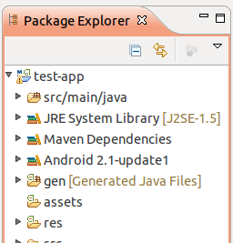

The Android Configurator is an Maven Integration for Eclipse (m2e) plug-in that adds maven support for Android Developer Tools (ADT) and the Maven Android Plugin. It brings the power of Maven dependency management into the ADT.
You will need Eclipse Indigo or Juno installed.
You can install the Android Connector for Maven via the Eclipse Marketplace. Select Help -> Eclipse Marketplace... and search for "android m2e".
Click the Install button next to the Android Connector for Maven that appears and follow the path through the wizard dialog to install the plug-in and its dependencies (including the Android Development Toolkit and the Maven for Eclipse m2e plug-in). Accept the terms-and-conditions and click Finish.
Once you restart your Eclipse workspace you should be ready to start using the Android Connector.
If you already have an Android project please make sure you have created a POM for your project using version 3.0.0 or greater of the maven-android-plugin.
Then right-click on your project and select Configuration -> Convert to Maven Project.
If you are starting with a new project you can use the Maven Android archetypes to create Android projects completely within Eclipse:
Note: The new 1.1 version of the m2e plug-in requires the presence of a
src/test/javafolder in your workspace but the Android archetypes do not support this yet so you may have to manually add this folder to your project.
Either way you should end up with an Eclipse project looking something like this:
